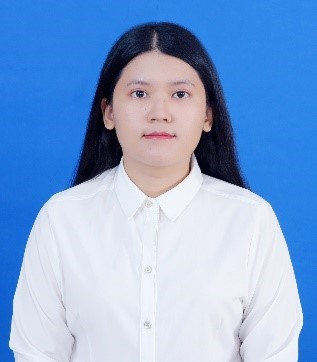

Sandy Sine

Summary
Self-confident, Energetic, Desire to be successful and be able to work under pressure
Education
Bachelor of Electronics & Telecommunication engineering [2015 - 2019]
King Mongkut's University of Technology Thonburi (KMUTT), Bangkok
Work Experience
Period: July 2022 – Nov 2022 (5 months)
Company: Advanced Wireless Network Company Limited (AIS : AWN) Bangkok
Department: Fixed Broadband (FBB) IT planning & operation
Position: Engineer
Responsibilities:
- Support data inquiry report based on equipment movement cycle in the fixed broadband inventory system.
- Participate user acceptance testing for verification of applications and hardware before launching the new optical line terminal and network management system on the production network.
- Participate and support preventive maintenance of the network management system.
Period:Period: Sep 2019 - Jan 2022 (2 Years 5 months)
Company: Honda Engineering Asian Co., Ltd. Thailand
Department:Developing engineer automobile section
Position:Developing engineer
Responsibilities:
- In-charge of electrical & software research and development of new equipment and instrument for Honda assembly frame plants.
- Design software specification sheet
- Cooperate and control maker/supplier
- Participate equipment installation and commissioning including troubleshooting the technical issues.
- Create document, provide training & follow up the production trial/launching.
- Take lead to support overseas customer such progress meeting and technical supports
- Analysis QCD and Kaizen activities
Technical skills
Computer language: C++/ Visual C, Arduino, VHDL, VB.NET, HTML, JAVASCRIPT, CSS, SQL and Microsoft Office
Hardware: Analog, Digital and Microcontroller circuit
Language skills: Good spoken and written in Thai and English
Awards [2019]
- Winner of Project Award Day at KMUTT: Holter Monitoring
- 1st Runner-up in Electrical and Computer Cluster on Project Day at KMUTT: Holter Monitoring
Other